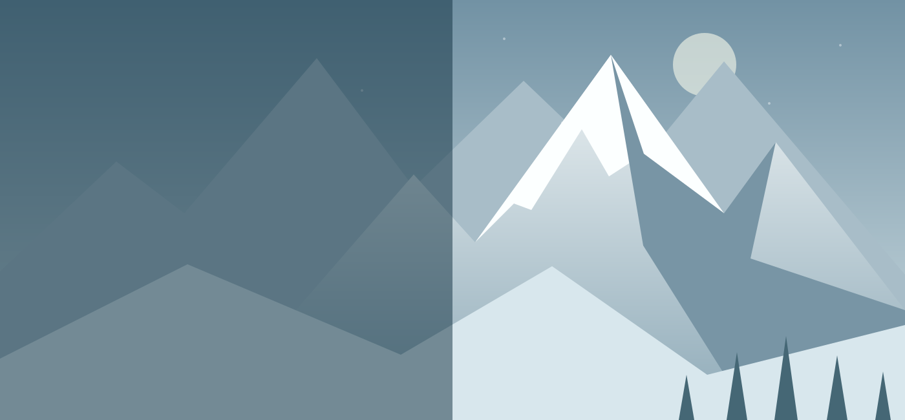
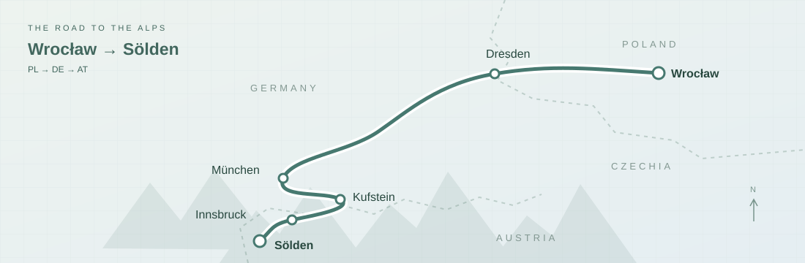
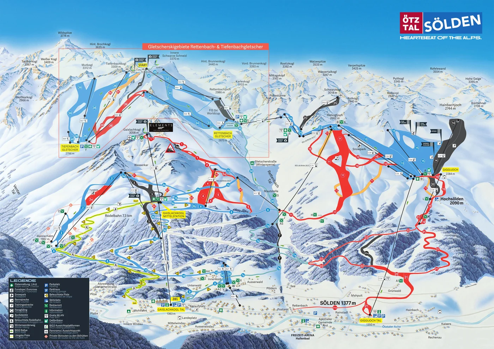

Drive, check in, unpack. No skiing planned.

AUSTRIA · ÖTZTAL · WINTER
Sölden.
A week in the Alps.
Five days on the snow.

Our road trip through GermanySchematic overview of the route used for the fuel estimate. The line is illustrative; check actual roads and conditions in navigation.
Open in Google Maps ↗7 nights / 8 daysArrival + departure included
5 ski daysA flexible mountain plan
By carFrom Wrocław, Poland
30 Jan – 6 Feb2027 · Tentative dates
01 / THE IDEA
Mountains. Snow. No rush.
Four travellers, one winter road trip from Wrocław to Sölden, Austria. Two will ski and two will explore off the slopes. Tentatively Saturday 30 January to Saturday 6 February 2027: seven nights, eight calendar days, including arrival and departure. Five ski days and one flexible day.
The dates may change. Plan to drive there in one day, with breaks; the exact route and number of drivers still need to be decided.
02 / THE RHYTHM
One week, at a glance.
An easy first day. Get to know the mountain.
Discover more runs, with time for breaks.
Consider the glacier area if conditions suit.
Ski, or take a lighter day if needed.
Favourite runs, then a relaxed evening.
A village walk, thermal pools or simply rest. Pack in the evening.
Check out and drive back, with breaks.
03 / ON THE MOUNTAIN
Three areas to explore.
The resort connects Giggijoch, Gaislachkogl and the glacier area by lifts and slopes. We will choose each day’s route around ability, weather and open runs.
Giggijoch
One of the main areas to get to know during the week. Choose runs after checking the official map.
Gaislachkogl
Another part of the resort to include in the plan. Check route connections before setting off.
Glacier area
An option for a suitable day. Confirm lift operation and weather before heading higher.
04 / FIND YOUR LINE
The mountain, mapped.
A piste map of Sölden with numbered runs, lifts and difficulty colours. Open the image at full size to read the details; use the official live map for current openings.

05 / GETTING THERE
The journey is part of the trip.
By car, with room to breathe
Wrocław → planned stops → Sölden
Departure: Wrocław, Poland. Travel by car, aiming to arrive the same day. Route, break locations, road charges and departure time are still to be planned.
Decide before departure
- Number of drivers and departure time from Wrocław
- Breaks during the one-day drive
- Parking at the accommodation and ski access
- Winter equipment and road requirements for the chosen route
06 / FIND OUR BASE
Nine options. Two budgets.
Shortlist for four travellers, two separate bedrooms and a kitchen; living-room compromises are noted. Tentative stay: 30 January – 6 February 2027, seven nights. Categories compare this shortlist; they are not hotel star ratings.
Start with Haus Marita 6 XL for a low published total, Bernegg for a separate living room, or Bergkristall for less driving. Mora needs a current quote before its lower starting price can be compared.
Research checked 19 October 2026. Availability is unconfirmed for all nine. Rates below are published tariffs, not live bookable offers.
Soft green = north of Sölden, reached earlier when entering Ötztal from the north. This should shorten the final valley leg from Wrocław; full-route kilometres and time savings are not verified.
All prices are for the whole apartment for four, unless marked otherwise. Seven-night totals show known fees. Where local tax is extra, €140 assumes four chargeable guests at €5 × 7 nights; ages may change it. Fuel, lift parking and road charges are not included. Driving bands are planning estimates to the Sölden lift area, not checked journey times or a winter guarantee; route links let you verify each address.
Lower cost
Five options · including compact alternatives and an unconfirmed lower-price lead
Oetz
Appartements Mora · 75 m²
Approx. 35–45 min by car
75 m² · 2 separate bedrooms · separate kitchen · 2 bathrooms · free parking. No separate living room; dining space is in a bedroom.
Per nightfrom €140 · quote needed
7 nights · base rentfrom €980 · indicative
7 nights · with known feesfrom €1,200 · indicative
A lower-price lead if you accept the living-room compromise. The high-season starting rate is not a confirmed quote for your week.
Illustration: €140 × 7 + €80 cleaning + €140 assumed tax = €1,200. The host labels the high-season column “Winter 2026”, and mentions holiday surcharges. Ask for the 2027 rate before comparing totals.
Oetz
Haus Marita · apartment 6 XL
Approx. 35–45 min by car
2 separate bedrooms · small kitchen-living area · 2 bathrooms · parking. Compact shared space, not a full separate lounge.
Per night€180
7 nights · base rent€1,260
7 nights · with known fees€1,260
A cheaper apartment in the same Haus Marita building as apartments 1 / 2. The saving comes with a smaller shared area.
Published winter 2026/27 tariff includes cleaning and local tax. Special-week increases are possible. Confirm the apartment and dates with the host.
Sautens
Chalet Bernegg
Approx. 40–45 min by car
85 m² · 2 bedrooms · separate living room · kitchen · 2 bathrooms · parking.
Per night€198
7 nights · base rent€1,386
7 nights · with known fees€1,621
Strong value if the longer daily drive works for you. Private infrared cabin included.
€95 cleaning + €140 assumed local tax. Season B covers the seven nights. The drive is near the upper end of your range; check the route before booking.
Oetz
Haus Marita · apartments 1 / 2
Approx. 35–45 min by car
2 separate bedrooms · kitchen-living area · free parking. Confirm the size of the sitting area.
Per night€205
7 nights · base rent€1,435
7 nights · with known fees€1,435
Lowest published complete total in this shortlist. A village base for non-ski days.
Cleaning and local tax are included. The host may quote a higher rate for special weeks; request confirmation for these dates.
Unterried · Längenfeld
Appartement Aqua
Approx. 20–30 min by car
Large apartment with kitchen and living room; the full layout has 3 bedrooms. Parking available.
Per night€220
7 nights · base rent€1,540
7 nights · with known fees€1,780
A useful compromise between price and driving distance. Confirm that the four-person rate includes two separate bedrooms.
€100 cleaning + €140 assumed local tax. Low season runs through 5 February; departure is 6 February.
Mid-range
Four options · more space or a shorter drive; seasonal bands may overlap
Umhausen
Appartement Bergkristall · 70 m²
Approx. 25–35 min by car
70 m² · 2 bedrooms · kitchen-living area · 2 bathrooms · free parking.
Per night€240
7 nights · base rent€1,680
7 nights · with known fees€1,900
A balanced choice for space, price and a village setting, with less driving than Oetz.
€80 cleaning + €140 assumed local tax. Use the 70 m² unit: its apartment number differs between the description and tariff pages.
Sölden
Apart Mare · Marc
Approx. 5–10 min by car
60 m² · 2 bedrooms · kitchen-living area · 2 bathrooms · terrace. Confirm parking with the host.
Per night€225–335
7 nights · base rent€1,575–2,345
7 nights · with known fees€1,715–2,485 + cleaning
Close to the resort; compare its exact quote against the fuel and parking costs of staying farther away.
Published winter range, not a quote for your dates. Total adds €140 assumed local tax; cleaning remains unpriced.
Brunau · Oetz
Alpenresidenz Ötztal · type 1
Approx. 40–45 min by car
90 m² · 2 bedrooms · living area · kitchen · 2 bathrooms · free parking.
Per night€320
7 nights · base rent€2,240
7 nights · with known fees€2,500
More space and a living area with a fireplace. The longer drive buys space rather than the lowest price.
€120 cleaning + €140 assumed local tax. High season starts on 30 January. Near the upper driving limit; verify the route.
Sölden · Außerwald
Fridolin · Edelweiß
Approx. 5–10 min by car
48 m² · 2 separate bedrooms · kitchen with dining area · balcony · parking. A separate lounge is not listed.
Per night€335
7 nights · base rent€2,345
7 nights · with known fees€2,565
At the upper end of the retained budget: a resort option to compare with the longer daily commute from cheaper villages.
Top-season rate for 30 Jan – 6 Feb: €335 × 7, plus €80 cleaning and €140 assumed local tax. No meal plan included.
A kitchen-living area may be smaller than a separate lounge. Before booking, confirm the exact apartment, two bedrooms included in the four-person price, parking, cancellation terms and the final seven-night total.
07 / BEYOND THE PISTES
A holiday for all four.
Two ski, two explore. These are ideas for independent days and the flexible day together. Check winter opening times and walking conditions before setting off.
Zwieselstein
A quiet village a few kilometres south of Sölden: historic buildings, old farms and a small church. A good candidate for a gentle village stroll.
Official details ↗Längenfeld · AQUA DOME
Combine a village outing with thermal pools. A separate outing from Sölden; admission and transport are additional costs.
Official details ↗Sölden · Freizeit Arena
An indoor pool and sauna option right in Sölden, useful for a bad-weather day. Add a local stroll and a café.
Official details ↗Plan who keeps the car during ski days. Valley buses provide another way to travel independently; check the timetable for the chosen dates.
Valley transport information ↗08 / THE PRACTICAL PART
A first budget, with the sums shown.
These estimates cover the whole car and both skiers for the trip, not a per-person total. Accommodation and food remain outside this subtotal. Checked 19 October 2026.
| Return drive · fuel & road charges · no parking | About €180–270 |
| Accommodation for 4 · 7 nights | To estimate |
| 5 consecutive ski days × 2 adults | €818 · published 2026/27 cash price |
| 5-day rental · 2 pairs of skis + poles, 1 pair of boots | Budget €300–400 |
| Food & other expenses | To estimate |
Estimated subtotal · drive + ski passes + rentalAbout €1,300–1,500 for the group
No accommodation, food, parking or local driving included. This is not the full holiday budget.
How the driving estimate works
Planning route: Wrocław → Dresden → Munich → Kufstein → Innsbruck → Sölden, returning the same way. Allow 2,000–2,200 km in total; this is a route allowance, not a measured navigation distance. Northern accommodation may shorten the valley leg.
Assume 5–6 L/100 km for the economical 2.0 diesel with four travellers and luggage. At an assumed €1.60–1.90/L, 100–132 L costs roughly €160–251. The fuel price is a budgeting assumption, not a forecast for February.
Add a €15 allowance for one Austrian 10-day vignette covering 30 January–6 February. The verified 2026 reference is €12.80; a confirmed 2027 tariff was not found. This route assumes no Czech transit or separately tolled Alpine crossing, and no general German passenger-car motorway toll.
Rounded driving budget: €180–270 per car, or about €45–68 each if shared equally by four. Daily trips from the apartment and all parking are excluded.
Ski passes · published, not guessed
Peak season includes 30 January–26 February 2027. A five-consecutive-day adult pass is €409; two cost €818. With the current plan, ski 31 January–4 February and keep 5 February free. Early online prices can be lower; no unverified discount is deducted here.
If a rest day falls between ski days, the flexible 5-in-7-day pass costs €431.50 per adult, €863 for two: €45 more in total. The budget table uses consecutive days.
Official winter 2026/27 prices ↗Rental · just what you need
Five days for two adult skiers: two pairs of skis, two pairs of poles and one pair of boots. The second skier uses their own boots. No helmets, clothing or lessons are added.
SunUp reference: five-day TOP Class skis €100 per pair, boots €89 per pair. Two skis + one boots = €289 before any pole supplement. Allow roughly €300–320 after a small reserve for poles and price changes; confirm pole inclusion.
Cross-check: Sport4You lists adult TOP skis including poles at €26/day and boots at €22/day. Five daily rates give (2 × €26 + €22) × 5 = €370. A multi-day quote may be cheaper.
Use €300–400 as a planning range, not a confirmed 2026/27 booking price: the rental pages do not clearly label the tariff season. Prices assume five consecutive rental days; keeping equipment across a rest day may cost more. Optional rental insurance and storage are excluded.
09 / BEFORE WE GO
A small checklist.
Checks are saved in this browser only.
10 / KEEP HANDY